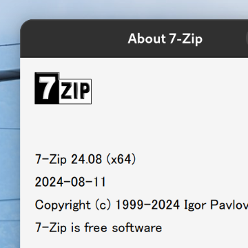
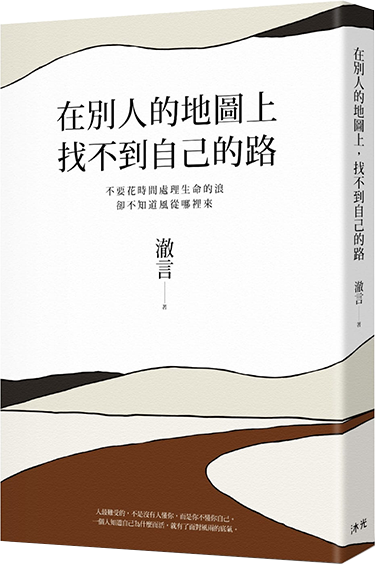
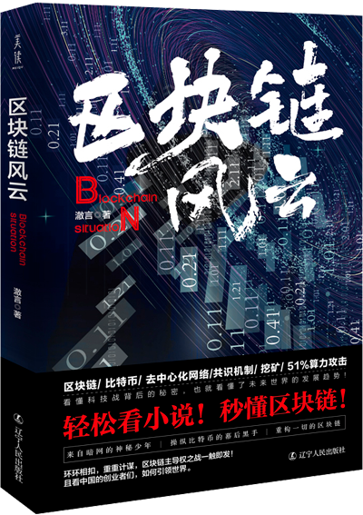
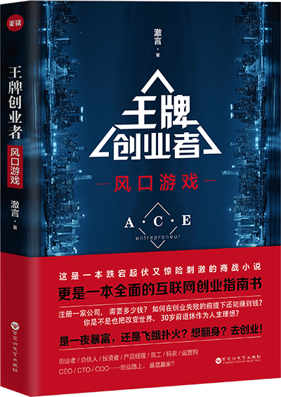
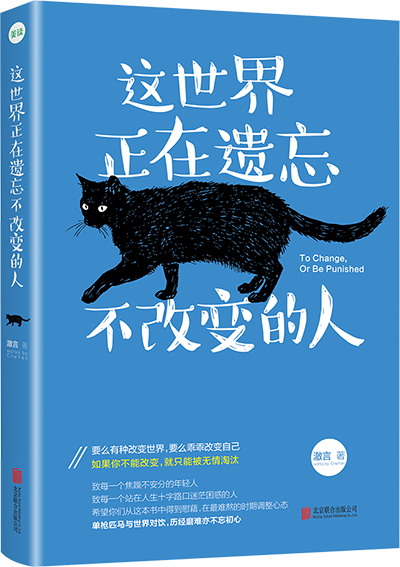
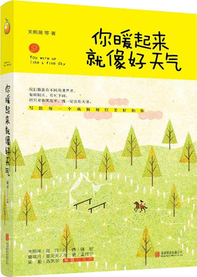

私についてAbout Me
徹言｜プログラマー・作家・脚本家
2009年からフルスタック開発に従事し、Python（Flask・PyWebIO・Streamlit）、JavaScript（ES6+）、MySQLなどの技術スタックを活用してまいりました。2014年に起業し、投資を獲得した経験があります。チームマネジメントやプロジェクト実行の豊富な経験を持ち、書籍出版や映像作品の脚本・制作にも携わるなど、多分野での協働経験を積んでまいりました。
現在は日本でWeb開発職を希望しております。
2009年からフルスタック開発に従事し、Python（Flask・PyWebIO・Streamlit）、JavaScript（ES6+）、MySQLなどの技術スタックを活用してまいりました。2014年に起業し、投資を獲得した経験があります。チームマネジメントやプロジェクト実行の豊富な経験を持ち、書籍出版や映像作品の脚本・制作にも携わるなど、多分野での協働経験を積んでまいりました。
現在は日本でWeb開発職を希望しております。
日本全国100以上のテレビ局の公開番組をオンラインで視聴可能。
動画サイト / 公開：2024年
オンライン日本語単語暗記ツール。辞書切替や各種補助表示設定に対応。
学習ツール / 公開：2024年

7z圧縮ソフトをLinuxに移植、ネイティブ7zコマンドラインツールも利用可能。
ソフトウェア移植 / 公開：2024年
Orchideaテーマから派生したテーマ。Cinnamon公式リポジトリに統合済み。
システムテーマ / 公開：2023年
書籍業界向けに開発されたデータ検索ツール。
データ分析ツール / 公開：2021年
クラシックオンラインゲームの復刻版。オリジナルのプレイ方法を忠実に再現。
ゲーム / 公開：2021年
文悦科技（北京）有限公司、2014年設立。フォント設計・開発・販売に特化し、アリババから投資を受ける。
ウェブサイト設計・開発に特化した会社。
起業プロジェクト / 公開：2012年
2007年8月29日創刊、オリジナルコンテンツを主とする電子雑誌。
電子雑誌 / 公開：2007年




